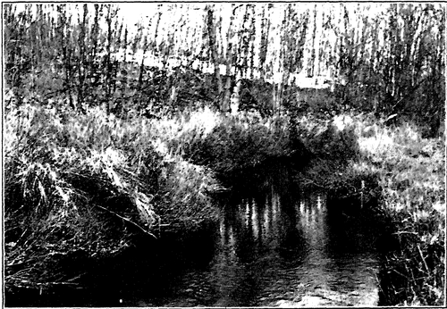
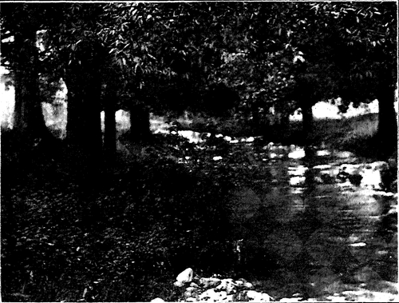

Form And Spirit. Part 3
Description
This section is from the book "The Natural Style In Landscape Gardening", by Frank A. Waugh. Also available from Amazon: The Natural Style in Landscape Gardening.
Form And Spirit. Part 3
Any direct attempt to capture the spirit of the landscape hardly promises success. Yet, beginning with this dear understanding of the existence of such a spirit, and living in the constant thought of learning from that great Mother Spirit, we may be perfectly sure of making some progress. Growth in spiritual discernment and in spiritual power is just as natural to a sane man as growth in bulk is to a healthy boy.
A great deal depends on taking the proper attitude,—on looking always for the spiritual significance of the landscape—on thinking of it in spiritual terms—in living the life of the spirit in happy association with the dual world (spirit and matter blended) about us,—a world in which we are ourselves characteristic and integral.
Every effort is worth while, of course, which will enable us to grasp more firmly our own emotional experience. We want to clarify our own feelings derived from the landscape. We can always find help in this direction from any of the arts, since all of them draw their inspiration from nature. Literature is full of this spirit, especially the sounder portions of the modern nature literature. Careful reading in this field will help because it will show us what response good men and good women have made to the appeals of the landscape spirit.
For about two generations the painters, like the poets, have dealt honestly with the landscape, endeavoring to get from it the truth of nature rather than trying to fix upon it their preconpeived superstitions. It hardly needs to be said that every nature painter is trying to do more than to record the mere physical features of the landscape. Every one of them is trying, with all the power there is in him, to offer us also a spiritual message. It is, therefore, greatly worth our while, as lovers of the landscape, as believers in spiritual things, and as would-be landscape architects, to see what the painters have to offer.
After a good many years of study and teaching, however, I am inclined to believe that music offers the readiest approach to a spiritual interpretation of the landscape. Music has so slight a physical body that very few persons are troubled by it. Even the stupidest publican understands that music is addressed straight to his spirit. If he gets anything from it it must be some emotionaleffect. The emotional or spiritual quantity in music is particularly evident.
Moreover, the emotions aroused by music are singularly like these aroused by the landscape. One hears a ringing Sousa march, and one experiences the fine martial emotions that one feels of a brisk October morning as one spins down the street in the automobile between the double row of stately maples. Or one listens to Mischa Elman play the DvoMk Humoresque—to take another trite example—and one feels the homesick longing expressed by Tom Sawyer who sat on the hills in springtime and looked across the valleys and yearned and yearned and wanted to cry but couldn't think of anything to cry about.
So direct is this parallelism between music and the landscape that for some years I have been in the habit of using music to arouse the imaginations of my students in landscape gardening. It is absolutely essential, of course, that their imaginations be aroused—that they be trained in the habit of landscape feeling. So I play them on the Victrola the best records that are made—the Sextet from Lucia, the Wedding March from Lohengrin, Haen-del's Largo, and even some symphonic selections, and then I require them to return to me programs of landscapes which would awaken the same sentiments. The exercise is perfectly simple and practical, and gives better and more uniform results than many of the experiments in chemistry.
Any one will find it profitable to use music in this way, and to practice himself in the interpretation of music into landscape and landscape into music. It does not require any special musical education any more than it demands a specialized education in landscape.
In spite of our abject poverty of spiritual language, it may be worth while for us before dropping this subject to try to specify some of the spiritual elements or products of landscape.
And first of all the landscape breathes with the spirit of life. There may be a perfectly dead landscape on the moon, but that is not our planet. Our world teems with life. From the infinitesimal microbe, swarming by millions in the drop of water, to the crowding trees in the forest there is life—growing, urgent, irrepressible life. Even the inanimate ocean and the tumbling clouds and the singing brook are so nearly alive that they tell the same story to our listening ears.
Then the world is full of energy—of powers From the tiniest insect boldly winging its course against the wind, to the storm waves of the ocean grinding to powder the rocks on the headland, there is the expression of immeasurable energy. The wide sweeping prairie wind, the crashing tree in the forest, the roaring waterfall, the spouting geyser, all impress our souls with the infinite power which moves creation.
Then there is the spirit of beauty, as universal and almost as irresistible. Everywhere the world is beautiful. If one were to ask for a definition of beauty we could not do better than show him the landscape: that is beauty. Nature is the beauty by which all other beauties are measured. This quality, too, is universal. From the most fragile snow crystal to the highest mountain all is instinct with the spirit of beauty.
The landscape is nearly always peaceful There are occasional storms of magnificent fury, but as a rule the arctic wastes and the tropical jungles are both as peaceful as eternity. Those who seek peace wisely always go to the landscape. Physicians uniformly prescribe the quiet country and the open landscape for their over-civilized and bedeviled patients. The worried man who makes an excuse of his trout rod to linger in the solitudes where the shadows lie across the pools knows this landscape spirit of peace; and the tired woman gazing out of her window to the purple of the distant hills knows.
In the landscape is not only peace but joy. It is a joy sometimes so wild and gay as almost to contradict the spirit of peace. The rivers chuckle to themselves as they tumble over obstacles in their way; the flowers burst with joyous bloom; the birds sing with all their might and main, and the trees of the forests clap their hands for joy. It is enough to dry the tears of Niobe.
Yet even in our moments of deepest vision and highest ecstasy the landscape is not wholly revealed. There is always something beyond. Indeed, this spirit of mystery is one of the most truly characteristic qualities of the natural world. It is a great and highly spiritual quality wholly opposed to the scientific passion for complete and classified knowledge. Our generation has followed this passion for science to such lengths, has been so wrought with the ideal of discovering and publishing everything, that this spirit of mystery comes as a greatly needed corrective. We shall never understand the landscape until we understand that we can never understand it all.
EARLY SPRINGTIME.
Photograph by the Author.
AS VIEWED I ROM THE BRIDGE.
In the story of the creation it is related that the spirit of God breathed upon the waters. The spirit of God still breathes there. Most men find God speaking to them most directly from the clouds, from the rain, from the sea or from the hills. One of them said:
"I will look up to the hills, whence cometli mj help: "My help cometh from the Lord, who made Heaven and Earth".
Yes, quite plainly, of all the spirits moving in the landscape the greatest is the Father of all spirits, the one known to the theologians as the Holy Spirit. But of his progeny there are legions more. Not only the great spirit of life, the spirit of power, the spirit of beauty and the spirit of joy, but all the lesser spirits—the prairie spirit, the spirit of the pine woods, the spirit of the palmetto swamps, and all the rest—to every landscape its own spirit. It is very, very easy to conclude that the Indians were right when they thought of the world as peopled with spirits, assigning to every tree and shrub its living soul.
And so we conclude that this physical world which we see (and which the cow sees) is only a part of the landscape. Within those physical forms and without them and beyond them there are corresponding spiritual parts which form a spiritual landscape just as real and even more closely related to our half-human, half-divine souls.
Continue to: